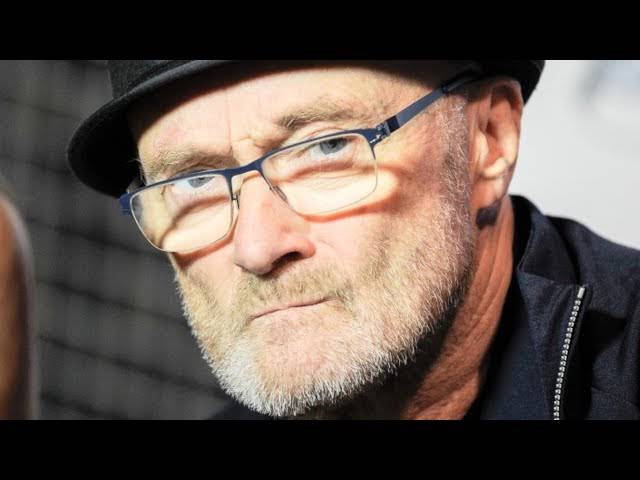

Philip David Charles Collins (Chiswick, Middlesex, 30 de enero de 1951),[1]más conocido artísticamente como Phil Collins, es un cantante, baterista, compositor, productor discográfico y actor británico.[2] Fue nombrado teniente de la Real Orden Victoriana (LVO) y es considerado como uno de los más grandes artistas en la historia de la música.[3] Entre los años 1984 y 1989 lideró la lista de éxitos estadounidense «Billboard Hot 100» como cantante en ocho ocasiones, siete como solista y una con Genesis, banda de la que fue miembro entre 1970 y 1996. Tras la salida de Peter Gabriel en 1975 se convirtió en el cantante solista del grupo, con el que ha tenido alguna colaboración esporádica desde el año 2007. Sus canciones a menudo tratan de amores perdidos, temas personales y sobre el problema mundial de la pobreza y el consumo de drogas. Según datos de Atlantic Records (de 2002) las ventas correspondientes a su carrera en solitario han alcanzado los 150 millones de discos en todo el mundo.[4] Collins ha ganado numerosos premios musicales a lo largo de toda su carrera, incluyendo siete Premios Grammy, cinco Premios Brit, entre ellos a mejor artista británico en tres ocasiones, un Premio Óscar y dos Globo de Oro por su trabajo en bandas sonoras.[5][6] Collins es uno de los tres artistas pop, junto con Paul McCartney y Michael Jackson, que han vendido más de 100 millones de álbumes en todo el mundo tanto en su carrera en solitario como formando parte de una banda. Contando su trabajo con Genesis, sus contribuciones con otros artistas y su exitosa carrera en solitario, Collins obtuvo más de cuarenta éxitos que encabezaron la lista del «Billboard Hot 100» durante la década de 1980.[7] En 2008 Collins ocupó el puesto número 22 en la lista de «Los 100 mejores artistas de todos los tiempos según Billboard Hot 100».[8] Fue incluido en el Salón de la Fama del Rock and Roll como miembro de Genesis en 2010. El 7 de marzo de 2011 se hizo pública su retirada del mundo musical por problemas de salud y por no sentirse cómodo con la industria musical en general. En 2015 anunció su regreso al mundo de la música, incluyendo un nuevo álbum y su correspondiente gira de soporte. Phil Collins se despidió definitivamente de los escenarios como cantante, junto a su principal banda, Génesis, el 26 de marzo de 2022 en el O2 Arena de Londres, en lo que también sería el último concierto de la banda.
Infancia y juventud
Collins nació en el suburbio londinense de Hounslow el 30 de enero de 1951. Su padre, Greville Collins, era agente de seguros, mientras que su madre, Winifred, era una mánager teatral. Cuando sus padres le regalaron para Navidad una batería de juguete, nunca pensaron que en él nacería un interés tan importante por la música. Phil tenía por entonces cinco años y este sería el primero de los muchos juguetes que los Collins comprarían a su hijo.[9] Aprendía jugando junto a la televisión y la radio y, como nadie le enseñó a leer y escribir en notación musical convencional, diseñó su propio sistema.[10] Su formación profesional comenzó con catorce años cuando entró en la Barbara Speake Stage School. Empezó a trabajar como actor y modelo, ganando su primer papel importante como Artful Dodger en una producción del musical Oliver!. Participó también en la película de The Beatles A Hard Day's Night[11] y en Chitty Chitty Bang Bang. Collins también estuvo entre los tres finalistas para el papel de «IQ» en el show televisivo estadounidense The Bugaloos (que perdió frente al también actor y músico John McIndoe).[12] A pesar de los inicios de su carrera como actor, Collins comenzó a orientarse paulatinamente hacia la música. Mientras asistía a la Escuela Comunitaria Chiswick, formó una banda llamada The Real Thing y más tarde se unió a The Freehold. Con este último grupo escribió su primera canción, titulada «Lying Crying Dying».[13] La primera grabación de Collins fue como baterista del grupo Flaming Youth (junto a Ronnie Caryl, Brian Chatton y Gordon «Flash» Smith). El único disco de la banda, «Ark 2», de 1969, era un trabajo conceptual, inspirado en el reciente interés de los medios por la Luna. No tuvo mucho éxito comercial a pesar de las críticas positivas (Melody Maker lo destacó como el «álbum pop del mes»).[14] Después de un año de gira, las tensiones dentro de la banda y la falta de éxito comercial terminaron por disolver el grupo.
Años 1970, Genesis y el rock progresivo
En 1970 Collins respondió a un anuncio en la revista Melody Maker donde se buscaba «un baterista sensible a la música acústica, y un guitarrista de acústica de doce cuerdas».[15] La audición se produjo en la casa de los padres de Peter Gabriel y consistió en tocar algunas pistas del segundo álbum del grupo, Trespass (1970). Como Collins llegó temprano, pudo memorizar las piezas escuchando a los demás.[16] Un año más tarde el grupo sacaría al mercado su tercer álbum, Nursery Cryme, donde Phil Collins se encargaría de la batería, la percusión y los coros (voz principal en «For Absent Friends»), y lo continuaría haciendo en los cinco años siguientes, a través de LP clásicos del grupo como Foxtrot (1972) o Selling England by the Pound (1973). Phil Collins con Mike Rutherford durante la gira de Duke en 1980. En 1974, mientras Genesis grababa el álbum The Lamb Lies Down on Broadway, Brian Eno necesitó de un baterista para su álbum Another Green World. Collins fue enviado para ocupar ese lugar y realizar ese trabajo de Eno con la banda.[cita requerida] En 1975, tras la gira final del álbum The Lamb Lies Down on Broadway, Gabriel abandonó el grupo para realizar sus proyectos en solitario. Collins se convirtió en la voz principal después de una larga pero finalmente infructuosa búsqueda para el reemplazo de Gabriel (donde Collins se ocupó de la segunda voz, junto a cada uno de los más de 400 aspirantes que acudieron a la audición).[17] En el corto plazo, el grupo contrató a Bill Bruford para tocar también la batería durante las presentaciones en vivo, aunque Collins continuó desempeñando su rol de instrumentista en la banda durante las grabaciones. La batería de Bruford se puede escuchar en la canción «The Cinema Show» incluida en el álbum en vivo Seconds Out. Pronto Bruford fue reemplazado por el exmiembro de la banda de Frank Zappa Chester Thompson, que se convirtió en uno de los grandes músicos en la formación en vivo de la banda. Collins, sin embargo, siguió tocando la batería en todas las grabaciones de estudio del grupo. El primer álbum de esa nueva etapa fue A Trick of the Tail (1976), que alcanzó al tercer puesto en las listas de Reino Unido y el Top 40 en Estados Unidos. La revista Rolling Stone, confirmó: «Genesis ha conseguido convertir la posible catástrofe de la partida de Gabriel en su primer éxito estadounidense».[18] Tras la grabación del siguiente álbum del grupo, Wind & Wuthering, el guitarrista Steve Hackett se fue para iniciar su propia carrera en solitario. El grupo decidió seguir, pero esta vez como un trío, con Mike Rutherford tocando la guitarra y el bajo en el estudio, y Tony Banks en los teclados, aunque la formación regular incluía al baterista Chester Thompson y al guitarrista estadounidense Daryl Stuermer para las giras. Por entonces Collins trabajaba simultáneamente con un grupo de jazz fusión llamado Brand X. La banda grabó su primer álbum, Unorthodox Behaviour, con Collins como baterista, pero al ser Genesis la prioridad de Collins, hubo varios álbumes de Brand X sin él. Collins aseguró que con Brand X fue donde usó una máquina de ritmos por primera vez y cartuchos de 8 pistas en las grabaciones.[19] Collins también apareció en el primer álbum solista de su excompañero Steve Hackett, Voyage of the Acolyte, en el que ocupó el puesto de cantante y baterista. Cerrando la década de los años 1970, Genesis comenzó a sentir un cambio desde sus inicios con el rock progresivo, modificándolo por un estilo más accesible cercano al pop rock. El álbum And Then There Were Three (1978) presentó su primer hit-sencillo, que alcanzó el UK Top 10 y el Top 40, «Follow You Follow Me». En 1979 Phil colaboró con Camel en su disco I Can See Your House From Here en la percusión, y al año siguiente colabora con Mike Oldfield en el disco QEII, también en la percusión.
Años 1980: carrera en solitario y con Genesis
En los años ochenta, mientras Collins desarrollaba su carrera con Genesis, estableció una carrera paralela como solista. Con el grupo Genesis grabó una serie de exitosos álbumes entre 1980 y 1986, incluyendo Duke, Abacab, Genesis e Invisible Touch. Los asuntos predominantes en las letras de Collins a principios de los 80 (aunque nunca específicamente mencionados en sus canciones) estaban relacionados con la ruptura de su primer matrimonio y su entonces reciente divorcio. Los temas «Please Don't Ask» y «Misunderstanding» del disco Duke, de Genesis, muestran claramente las letras de Collins, donde trata sus relaciones fallidas. Para la grabación de su primer álbum en solitario, Face Value, de 1981, Collins atribuyó a su divorcio la principal inspiración e influencia,[20] como puede deducirse en canciones como «If Leaving Me Is Easy». Collins hizo su debut en vivo como artista solista apareciendo por invitación del productor discográfico Martin Lewis en el concierto a beneficio de Amnistía Internacional The Secret Policeman's Other Ball, en el Theatre Royal de Londres en septiembre de 1981, interpretando dos canciones de Face Value: «In the Air Tonight» («En el aire esta noche») y «The Roof Is Leaking» («El techo gotea») acompañándose con el piano. Face Value se convirtió en un sorpresivo éxito internacional encabezando las listas en al menos siete países, alcanzando el top 10 del Billboard 200 y consiguiendo finalmente un triple-platino en Estados Unidos. Los éxitos más conocidos del álbum fueron «In the Air Tonight», «I Missed Again» y «If Leaving Me Is Easy». En 1982 produjo el álbum en solitario de Anni-Frid Lyngstad, integrante del grupo sueco ABBA, Something's Going On, incluyendo la canción «I Know There's Something Going On», que se convirtió en un éxito. Ese mismo año, 1982, Collins participó del debut en solitario de Robert Plant, Pictures at Eleven, como baterista invitado, y luego haría lo propio en el segundo trabajo de Plant, al año siguiente, The Principle of Moments. Al igual que en Face Value, muchas de las canciones del siguiente álbum de Collins, Hello, I Must Be Going!, de 1982, provenían de problemas maritales con su primera esposa, como «I Don't Care Anymore» y «Do You Know and Do You Care». Los primeros álbumes de Collins tienen ciertas atmósferas pesadas y oscuras, sobre todo en las pistas de batería. En cuanto a Face Value, Collins dijo: «Tenía una esposa, dos hijos, dos perros, y al día siguiente no tenía nada. Por lo que muchas de estas canciones fueron escritas porque iba a través de estos cambios emocionales».[21] Hubo ocasionales influencias más pop con «Behind the Lines», de Face Value, por ejemplo, que fue una adaptación de una canción de Genesis que coescribió originalmente para el LP Duke. Face Value recibió críticas positivas y un multiplatino. Su siguiente disco, Hello, I Must Be Going!, le brindó un número uno en el Reino Unido por su versión del tema de The Supremes «You Can't Hurry Love». El álbum recibió un triple platino en Estados Unidos, al igual que su predecesor. La versión de The Supremes fue su primer éxito de Collins que entró en el Top 10 de los Estados Unidos (también alcanzó el Top 10 del Billboard Adult Contemporary). El álbum también alcanzó el número dos en la lista de álbumes británica, permaneciendo allí más de un año.[22] Dos años antes, Collins había tocado la batería en el tercer álbum homónimo de Peter Gabriel, el primer registro que cuentan con el efecto llamado «gated reverb», sonido que fue utilizado en la canción «Intruder». Gabriel supuestamente «no quería ningún metal en el disco» y pidió a Collins que dejara sus platillos en casa, para concentrarse en el sonido de su kit mucho más de lo habitual. El ingeniero de estudio Hugh Padgham aumentó el sonido de los tambores utilizando un micrófono normalmente destinado para la comunicación interna del estudio más que para grabar, alimentándolo a través de un procesador de señal («noise gate»). Esto permitió que la reverberación agregada a la batería sea cortada repentinamente antes que decaiga naturalmente. El resultado fue la llamado «reverberación cerrada», que se convertiría en el sello del sonido de Collins. Este fue precisamente el sonido de batería tan característico que se oye en canciones como «In the Air Tonight», en el mencionado hit de Frida, o en «Mama», de Genesis. Precisamente «Mama» fue uno de los grandes hits del álbum homónimo de Genesis editado en 1983, cuyo video obtuvo rotación masiva a través de la cadena MTV, junto a otros éxitos del álbum que fueron inmortalizados en formato videoclip, como por ejemplo la tragicómica «Illegal Alien», un alegato acerca de la inmigración ilegal. Este trabajo de Genesis llegó a ser múltiple platino en Estados Unidos, y alcanzó el primer puesto en Gran Bretaña, siendo un enorme éxito internacional. Hacia 1984 Collins lanzó la balada, «Against All Odds (Take a Look at Me Now)», que fue el tema principal de la película del mismo nombre, el cual se convirtió en el primer sencillo del músico en llegar al número uno del «Billboard Hot 100».[23] Más tarde en ese mismo año, Collins contribuyó a la producción del disco Chinese Wall, álbum debut del cantante Philip Bailey (de Earth, Wind & Fire). Además, con Bailey interpretaron el exitoso dueto «Easy Lover». Collins participó en el proyecto humanitario Band Aid con «Do They Know It's Christmas?», donde tocó y cantó. A comienzos de 1985 lanzó su álbum más exitoso, No Jacket Required, que vendió más de 12 millones de copias solo en Estados Unidos. Contiene los éxitos número uno «Sussudio» y «One More Night», así como «Don't Lose My Number» y «Take Me Home». También incluye «Who Say I Would» y «Only You Know and I Know». En el álbum participaron Sting, Helen Terry y su excompañero Peter Gabriel, entre otros. También grabó la exitosa «Separate Lives», un dueto con Marilyn Martin y un número uno por la película White Nights.[23] Collins tuvo tres canciones del álbum que fueron un número uno en 1985,[23] y No Jacket Required pasó a ganar varios premios Grammy por mejor álbum del año. No Jacket Required fue criticado por David Fricke, de Rolling Stone, que afirmó: «Después de años en la franja del art-rock, Collins se ha establecido firmemente en el medio de la carretera. Quizás él debería considerar probarse a sí mismo y a las expectativas de sus nuevos admiradores».[24] «Sussudio» también levantó críticas por sonar demasiado similar a la canción «1999» de Prince, un cargo que Collins no negó.[25] Sin embargo, el álbum fue directamente al número 1 en Estados Unidos y Reino Unido. En 1985, Collins fue invitado por Bob Geldof para participar del multitudinario evento de caridad denominado Live Aid, llevado a cabo simultáneamente a ambos lados del Atlántico, en Londres y Filadelfia. Collins fue el único participante del evento que apareció tanto en el concierto en el Estadio de Wembley como en el show en el JFK Stadium de Filadelfia, utilizando un avión Concorde para este propósito. En el JFK, Collins acompañó desde la batería a los exmiembros de Led Zeppelin Robert Plant, John Paul Jones y Jimmy Page, en la reunión especial de la banda para el evento. En 1986 aparece el álbum de Genesis Invisible Touch. La canción homónima alcanzó el número 1 en el American Billboard Singles Chart, la única canción de Genesis que logró hacerlo. El grupo recibió una nominación a «Video del año» de MTV en 1987 por el sencillo Land of Confusion (que incluía caricaturas de marionetas creadas por el equipo satírico británico Spitting Image) pero perdió frente al éxito de Peter Gabriel como solista "Sledgehammer".[26] Las críticas fueron generalmente positivas, por ejemplo en Rolling Stone, donde J. D. Considine declaró: «Cada melodía [en Genesis] se poda cuidadosamente para que cada floreo ofrezca no una epifanía instrumental, pero sí un sólido gancho».[27] En 1988 se estrena la película británica Buster, cuya banda sonora contiene dos canciones de Phil Collins, las cuales se grabaron para la película, en la que él también actuó. "Two Hearts" fue escrita principalmente para el film y "A Groovy Kind of Love" fue una versión de la versión grabada por The Mindmembers en 1965, logrando el #2 en la lista de sencillos británica. Ambas fueron publicadas como sencillos y Collins encabezó el Billboard Hot 100 con "A Groovy Kind of Love", y también alcanzó el #1 en el Reino Unido. Otras canciones incluyen "Big Noins", de Collins, y la de The Four Tops "Loco in Acapulco", coescrita por Collins. "Two Hearts" y "A Groovy Kind of Love" no fueron publicadas en un álbum solista de Phil Collins hasta 1998 con ...Hits, pero versiones en vivo aparecen en el álbum Serious Hits... Live!, de 1990. En 1989 Collins lanzó otro exitoso álbum en solitario, ...But Seriously, el cual incluía el himno «Another Day in Paradise», con David Crosby en los coros. «Another Day in Paradise» fue número 1 en las listas de Billboard a finales de 1989 y Collins ganó un Premio Brit al mejor sencillo británico en el año 1990 y el Premio Grammy en 1991 por mejor grabación del año.[28][29] El álbum ...But Seriously se convirtió en el primer álbum #1 en los Estados Unidos de la década de 1990, e incluyó también otro hit: «I Wish it Would Rain Down», con Eric Clapton en la guitarra como invitado especial, alcanzando esta canción el puesto #3 en Estados Unidos y el #7 en el Reino Unido.[22][23
Años 1990 y nuevo milenio
En 1991, y tras 6 años desde su anterior disco, ve la luz un nuevo trabajo de Genesis, We Can't Dance, que finalmente sería el último álbum de estudio de Phil Collins con la banda. We Can't Dance resultó un trabajo exitoso, con 4 nuevos hits: «Jesus He Knows Me», «I Can't Dance», «No Son of Mine» y «Hold on My Heart». Collins lo presentó junto a sus compañeros Mike Rutherford y Tony Banks en el marco de la gira "We Can't Dance Tour". Tras este trabajo, Collins anunció su salida de Genesis, para centrarse en sus proyectos personales como solista. El récord de ventas de Collins comenzó a decaer con la publicación de Both Sides (1993), un álbum en gran medida experimental, cuyas canciones, según Collins «se estaban volviendo tan personales, y tan privadas, que no quería la colaboración de nadie en ellas».[30] Con un sonido menos pulido Both Sides fue —sin embargo— un importante punto de partida, donde Collins no utiliza músicos de apoyo, y realiza todas las piezas vocales e instrumentales en su estudio casero. El álbum, con aire de soft rock, contenía temas inspirados en su segunda ruptura matrimonial y no fue bien recibido en las emisoras de radio. Sus dos mayores éxitos fueron «Both Sides of the Story» y «Everyday». Collins trabajó en el álbum completamente a espaldas de su compañía discográfica, y les tomó por sorpresa cuando les entregó un álbum completo que desconocían estaba grabando. Collins oficialmente se separó de Genesis en 1996 para centrarse en su carrera en solitario (Genesis produciría un álbum sin él, Calling All Stations, antes de entrar en receso). Collins intentó un regreso a la música pop con Dance into the Light (1996), donde incluyó éxitos menores como la canción «It's in Your Eyes», con cierta influencia de The Beatles. Aunque el álbum obtuvo un disco de oro en los Estados Unidos, sus ventas fueron considerablemente menores que sus álbumes anteriores. A pesar de ello, la gira posterior mantuvo las entradas agotadas. En 1996 Collins formó The Phil Collins Big Band, en la que él mismo tocaba la batería y con la que reinterpretaba temas de Genesis y del propio Collins en versión jazz. En 1998, el músico publica el álbum Hits, un recopilatorio en el que recoge sus mejores canciones, además de un nuevo tema, una versión de la canción de Cyndi Lauper «True Colors». La Big Band de Phil Collins llevó a cabo una gira mundial en 1998 que incluyó una actuación en el Festival de Jazz de Montreux. En 1999 el grupo lanzó el CD A Hot Night in Paris, que incluyó versiones arregladas para big band de «Invisible Touch», «Sussudio» y la más oscura «Los Endos Suite», de A Trick of the Tail. Un álbum recopilatorio llamado ...Hits se publicó en 1998 y obtuvo gran éxito comercial, con el que Collins volvió a conseguir un disco multiplatino en América. La nueva canción del álbum, «True Colors» (éxito de Cyndi Lauper en los años 80), recibió amplia difusión en emisoras Adult Contemporary y alcanzó el puesto número 2.[31] Asimismo, Collins grabó «You'll Be in My Heart» para la película animada de Disney Tarzán. El tema ganó un Óscar a la mejor canción original; fue la tercera nominación de Collins en esa categoría, después de las de 1985 y 1989. También recibió una estrella en el Paseo de la Fama de Hollywood el 16 de junio de 1999.[32] En 2002 lanzó Testify, su séptimo álbum de estudio en solitario, grabado durante dos años en su casa de Suiza. El álbum tuvo una recepción fría en Estados Unidos e Inglaterra, aunque obtuvo cierto éxito en Europa continental. La gira de promoción, First Final Farewell Tour, fue exitosa. En 2006, y tras muchas especulaciones, Collins se reunió con Mike Rutherford y Tony Banks, reactivando Genesis para la gira "Turn It On Again: The Tour", la cual fue anunciada el 7 de noviembre de ese año, casi 40 años después de la formación de la banda. La gira tuvo lugar durante el verano (boreal) de 2007, y abarcó 12 países de Europa, extendiéndose luego a Norteamérica. Ese mismo año Genesis fueron galardonados en el marco del "VH1 Rock Honors", durante una ceremonia en Las Vegas donde el grupo tocó tres canciones. Después de varios años de inactividad, al concluir la gira con Genesis en 2007, Phil Collins regresó al panorama discográfico con un nuevo disco que vio la luz en septiembre de 2010. Este nuevo trabajo musical de Collins lleva por nombre Going Back, en el cual Collins reversionó temas clásicos del estilo R&B y soul característico del sello Motown. En palabras del propio Collins: «Esto realmente comenzó por diversión, y opté por las canciones de Motown que más me gustan, las más oscuras, las menos conocidas».[33] Según músicos cercanos a Collins (entre ellos, Chester Thompson y Daryl Stuermer), Collins trabajó en la grabación del disco junto a cierta parte del grupo The Funk Brothers e incluso grabó él mismo las partes de batería a pesar de los efectos adversos de la lesión en sus vértebras que comprometió parte de la movilidad en sus manos (según Collins, debió pegar las baquetas a sus manos con cinta adhesiva para poder tocar la batería).[34] En octubre de 2015, en una entrevista con la revista Rolling Stone, Phil Collins anunció que oficialmente ya no se encontraba retirado: "El caballo está fuera del establo y tengo muchas ganas de salir", declaró. Este mensaje provocó que fuese tendencia en cuestión de horas en la red social Twitter, regresando a la industria musical tras 13 años de ausencia. En agosto de 2016 fue el encargado de inaugurar el techo retráctil del estadio donde se realiza el torneo de tenis US Open. El show estuvo cargado de emotividad, dado que el músico se encontraba alejado de los escenarios desde 2011 por problemas de salud. El clásico «In The Air Tonight» fue el tema interpretado por el exbaterista de Génesis.[35][36] En octubre de 2016 se publicó su autobiografía Aún no estoy muerto.[37] Posteriormente, anunció una nueva gira mundial denominada precisamente "Not Dead Yet Tour", durante la cual interpretó sus más grandes éxitos, girando por todo el mundo durante el año 2017 y 2018. Desde 2017 actúa sentado en una silla, pese a su pérdida de movilidad a causa de una caída en ese mismo año.[38] El 10 de septiembre de 2021 confesaba que había dejado de tocar la batería por sus problemas físicos y que sería su hijo Nic el que tomaría el relevo como baterista de Genesis.[39]
Cine, teatro y televisión
La mayoría de las incursiones de Phil Collins en el cine han sido a través de la música. Cuatro de sus siete canciones número uno estadounidenses provenían de bandas sonoras de películas, y su trabajo para Tarzán le valió un Óscar. Collins incluso cantó versiones en alemán, italiano, español y francés de la banda sonora de Tarzán para las respectivas versiones de la cinta a ser proyectadas y comercializadas en países de esas lenguas. La carrera de Collins como actor ha sido breve; de niño, apareció en tres películas, aunque en dos de las películas sus apariciones fueron como extra. Además de la mencionada A Hard Day's Night (1964), de The Beatles, el primer papel de Phil Collins fue en la película infantil Calamity the Cow (1967). Collins escribió e interpretó el tema «Against All Odds» para la película homónima de 1984. La canción se convirtió en la primera de sus siete número uno estadounidenses, y le valió una nominación al Óscar a la mejor canción original. Collins no fue invitado a tocar el tema en la presentación de ese año, aunque estuvo presente entre la audiencia en calidad de compositor. Se cree que los productores de la Academia no eran conscientes de su prominencia como artista, intérprete o ejecutante musical, y se eligió finalmente a la cantante Ann Reinking para interpretarlo durante la gala.[40] Durante mucho tiempo, como introducción a Against All Odds en sus conciertos, Phil repetiría irónicamente: «La señorita Ann Reinking no está aquí esta noche, así que supongo que voy a tener que cantar mi canción yo». Collins cantó el tema compuesto por Stephen Bishop «Separate Lives» para la película Noches blancas (1985) a dúo con Marilyn Martin, que le valió otro número uno, y una vez más fue nominada para un premio de la Academia de Hollywood. Cuando la canción fue nominada, y en relación con el desaire de Against All Odds, Collins en broma diría: «Al infierno con ello: subo igual (al escenario)», refiriéndose a la posibilidad de que la canción de Bishop ganara.[41 La primera incursión de Phil Collins como actor adulto llegó con Buster, de 1988, filme sobre el asalto al tren postal de Glasgow-Londres que tuvo lugar en Inglaterra en la década de 1960. La película recibió buenas críticas y Collins contribuyó con cuatro canciones para la banda sonora, entre las que destacan su interpretación de «A Groovy Kind of Love» (original del conjunto The Mindbenders) y el hit-single «Two Hearts», que escribió en colaboración con el legendario compositor de Motown Lamont Dozier. Los dos artistas ganarían un Globo de Oro por mejor canción original y fueron nominados al Óscar en la misma categoría. El crítico de cine Roger Ebert dijo que Phil «desempeñó con eficacia sorprendente» su papel de Buster Edwards, aunque la banda sonora logró más éxito que la película. Collins tuvo apariciones en Hook (Steven Spielberg, 1991), el docudrama sobre el sida And the Band Played On (1993), y protagonizó Frauds, que compitió por la Palma de Oro en el Festival de Cannes de 1993.[43] Del mismo modo, se desempeñó como actor de voz para las películas animadas Balto (1995) y la producción de Disney El libro de la selva 2 (2003). Un proyecto nunca terminado fue una película titulada The Three Bears (Los tres osos); originalmente pensada para ser protagonizada por Collins junto a Danny DeVito y Bob Hoskins. Collins menciona a menudo el proyecto fallido, al que nunca se le pudo escribir un argumento idóneo.[44] Tras la realización de la mencionada Tarzán la compañía Disney lo contrató, junto a Tina Turner, en 2003 para la banda sonora de otra película de animación, Brother Bear (Hermano oso), la cual obtuvo cierta difusión con la canción «Look Through My Eyes». Respecto a la televisión, Phil Collins se presentó dos veces en los Billboard Music Awards y también apareció en un episodio de la serie Miami Vice, titulado «Phil the Shill», en la que interpreta a un estafador. También protagonizó varios gags en el programa humorístico británico The Two Ronnies, y realizó un cameo para la serie Whoopi, de Whoopi Goldberg. En 2001 Collins representó un pequeño sketch en el programa satírico inglés Brass Eye (El ojo de lata), donde apareció apoyando a una fundación caritativa ficticia llamada «Nonce-sense» ("sin sentido"). En determinado momento de la sátira, Collins, vestido con una gorra de béisbol y una camiseta con el nombre de esta institución ficticia, mira fijamente a la cámara y declara: «Estoy hablando sin-sentido» («I'm talking Nonce-sense»). En 2006 Tarzán fue adaptada para Broadway. Collins contribuyó con 11 nuevas canciones y piezas instrumentales, amén de involucrarse en la producción. A diferencia de la película, donde Collins cantó todo el material, en este caso los personajes eran quienes cantaban en el escenario. Phil Collins fue retratado en el conocido programa de animación South Park, en el episodio «Timmy 2000», y fue visto nuevamente en el episodio «Cartman's Silly Hate Crime». Asimismo Collins aparece brevemente en la comedia animada finlandesa Pasila, en el episodio «Phil Collins Hangover» ("La resaca de Phil Collins"). La música de este episodio es un pastiche del tema «Another Day in Paradise». También aparece recreado en el videojuego Grand Theft Auto: Vice City Stories. En el juego, el cantante es llamado por Reni para dar un concierto una vez terminada su película. Vic se impresionó mucho al verle en persona. En el concierto viste con una camisa y unos pantalones a cuadros.